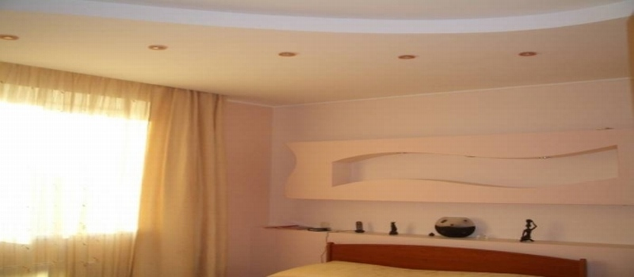

Правило нашей компании — компетентно и достойно вести бизнес!
Специально для Вас:
Бесплатно
составим смету!
Бесплатно
выезд менеджера на объект!
Бесплатно
обследование объекта и выявление дефектов!
Сезонные скидки и акции!
Поэтапная оплата!
Ремонт и выравнивание полов. Стяжка пола в Севастополе
-
Если вы проводите ремонт то так или иначе ремонт и выравнивание пола в квартире будет просто необходимо, а подготовить пол под укладку ламината или монтаж паркетной доски возможно, только если сделать стяжку пола. Для начала рассмотрим варианты выравнивание полов и стяжки пола, и какие бывают различия между ними. Виды стяжек для полов разделяются на цементно-песчаную, бетонную, самовыравнивающиеся стяжки он же наливной пол и конечно сухая стяжка, все эти варианты выравнивания пола успешно используются при ремонте квартир. От качественного выравнивания полов, зависит насколько ровно и без перепадов будет выполнена укладка финишных напольных покрытий таких как: плитка, ламинат, паркетная доска, паркет и другие виды полов. Работы по выравниванию пола стяжкой обычно происходят после демонтажа и возведения стен и перегородок из гипсокартона или пеноблока в квартире, а также после проведенного электромонтажа в помещении.
Для выравнивания пола цементно-песчаной стяжкой используются готовые сухие смеси, материал подбирается в зависимости от качества и толщины желаемой поверхности полов, как правило, смесь М 150 или М 300.
Для работ по выравниванию с помощью быстротвердеющих наливных полов (само выравнивающихся) требуется хорошая подготовка пола, очищенные от пыли и грязи основания поверхностей. В подготовительные работы также входит грунтовка пола, что в свою очередь создает оптимальную адгезию между бетонным основанием и наливным полом. Толщина слоя быстротвердеющего наливного пола колеблется от 3 до 30 мм и считается тонким слоем, существует вторая группа наливных полов от 30 до 80 мм и от 5 до 80 мм с быстротвердеющими свойствами, которая позволяет увеличить толщину слоя пола.
Следующим вариантом по выравниванию полов является способ, сухой сборки стяжки который закрепился в технологии ремонта квартир и составляет на данный момент большую конкуренцию вышеперечисленным техникам выравнивания. Монтаж сухой стяжки начинается с настила пленки и засыпки керамзитовой мелкозернистой предназначенной для этих целей, далее следует разравнивание сыпучего материала под уровень. После подготовки дальнейшим этапом выравнивания пола следует, монтаж гвл листов используя проклейку пазов и крепление саморезами.